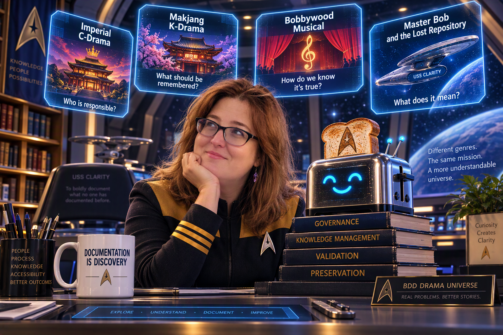

The Benevolent Documentation Dictator, and the Person Behind It
A universe of dramas, a creator, a philosophy about how organizations remember, and a charter for making all of it accessible.
The Universe
The Benevolent Documentation Dictator Universe is a collection of satirical stories that explore how organizations create, preserve, validate, share, and sometimes lose knowledge. Across C-dramas, K-dramas, musicals, and science fiction adventures, familiar workplace challenges become ancient scrolls, haunted repositories, cosmic archives, bureaucratic councils, and occasionally a talking toaster.
Each story stands on its own, but together they ask four enduring questions:
- Who owns knowledge?
- What should be preserved?
- How do we know something is true?
- Why does information matter?
Ancient scrolls, haunted repositories, validation festivals, and lost archives may be fictional. The challenges behind them are not.
About the Creator
Viktoria Muirhead
Information Development Leader · IBM Cloud Storage Services
Creator of the Benevolent Documentation Dictator.
Connect with me on LinkedIn (opens in a new tab)
Viktoria Muirhead leads Information Development for IBM Cloud Storage Services, working at the intersection of knowledge management, accessibility, governance, quality, and release readiness.
Across more than two decades in technology operations and information development, she has seen how organizations create, lose, preserve, validate, and sometimes misunderstand their own knowledge.
The Benevolent Documentation Dictator universe grew from those observations. Through historical drama, fantasy, musical comedy, and science fiction, it explores the organizational forces behind seemingly ordinary documentation problems: unclear accountability, forgotten knowledge, unsupported confidence, and the loss of purpose.
“The stories are fictional. The patterns may be familiar. Because sometimes the best way to understand an enterprise problem is to give it a costume, a dramatic soundtrack, and a toaster.”
The Philosophy Behind BDD
The Benevolent Documentation Dictator is a body of narrative work. It uses storytelling, fictional characters, and the conventions of familiar genres to explore real organizational challenges.
The stories are not simply documentation examples. A fictional situation makes a complex organizational or systems-thinking idea easier to recognize, and easier to talk about, than a policy document would. When a monster made of forgotten wiki pages wakes up in a data center, a team can discuss organizational memory without anyone having to admit that it is their wiki.
Themes the productions return to
- Knowledge management, and what happens to knowledge nobody owns.
- Documentation and information architecture.
- Governance and ownership: who was supposed to be in charge of what this was for.
- Accessibility and inclusive information design.
- Organizational memory, and the cost of forgetting.
- Validation and operational excellence: readiness is demonstrated, not declared.
- The relationship between organizational structure and communication.
The humor, the mythology, and the creative excess are part of the method. A dramatic soundtrack, a waterfall of forgotten knowledge, and a talking toaster are there because they make the patterns memorable.
AI-Assisted Creative Development
This project is an example of AI-assisted creative development and human-directed information design.
AI tools act as creative and technical collaborators. Viktoria Muirhead remains responsible for the project's direction, editorial decisions, design, and final content. The ideas, the universe, the themes, and the decisions about what is published are hers.
AI did not independently create this project, and it did not validate it. Review, accuracy, and accessibility remain human responsibilities, which is why the Accessibility Charter below describes ongoing work rather than a finished result.
The Productions
Four productions share one universe and one set of accessibility commitments. Each keeps its own genre and visual identity.
-
The Rise of the Benevolent Documentation Dictator
Imperial C-Drama
An imperial technical satire chronicling the trials and triumphs of the Imperial Storage Bureau, where documentation is destiny and every scroll must be validated.
-
Master Bob and the Monster in the Data Center
Makjang K-Drama
A 16-episode satire of knowledge, memory, and repository migrations in the Cloud Realm. Will the migration ledger survive? Will the documentation?
-
Master Bob and the Festival of Validation
Bobbywood Musical
A musical extravaganza where documentation validation meets Bollywood spectacle. One golden seal, zero rubber stamps, and a firm belief that readiness is demonstrated rather than declared.
-
Star Trek: Master Bob and the Lost Repository
Science-fiction pilot
A sci-fi satire in which the USS Clarity boldly documents what no one has documented before, and discovers that the issue is not the issue.
The BDD Accessibility Charter
This charter describes the project's commitment to accessible information and inclusive design. These are design commitments and ongoing work. They are not a claim of formal certification or conformance.
Our commitments
- Accessibility is part of information design. It is considered from the first draft, not added afterwards.
- Essential information is never only in an image or a visual effect. Images have text alternatives, and diagrams have a text equivalent.
- Content is understandable through its structure. Pages use landmarks, a logical heading hierarchy, lists, and tables with headers, so the story can be followed without seeing the layout.
- Everything can be used with a keyboard. Navigation, image viewers, and expandable content work without a mouse, and keyboard focus is always visible.
- Interactive elements have accessible names and predictable behavior. Buttons look and act like buttons, links look and act like links, and a dialog moves focus in, keeps it in, and returns it when closed.
- Text stays readable across devices and zoom levels. Pages are designed to reflow on small screens and when text is enlarged, without hiding content.
- Color is never the only way to communicate meaning. Current page, links, and status are also shown with text, shape, or underline.
- Multimedia has alternatives. Video provides captions and a transcript.
- Reduced-motion preferences are respected. Animation and transitions are removed for visitors who ask for less motion.
- Accessibility is revisited during creation, review, and maintenance. New stories follow a shared template and checklist so improvements are not lost.
Writing in other languages
Some stories include Chinese, Korean, and Hindi names and phrases. These are marked with the appropriate language so that screen readers can pronounce them correctly.
What this charter is, and is not
Our target is WCAG 2.2 Level AA. Automated checks and a first round of keyboard review have been done, but manual testing with screen readers, at high zoom, and with real users is still in progress. Until the relevant criteria have been fully evaluated, we do not claim conformance.
If something here does not work for you, please tell us. You can reach Viktoria Muirhead through LinkedIn (opens in a new tab).